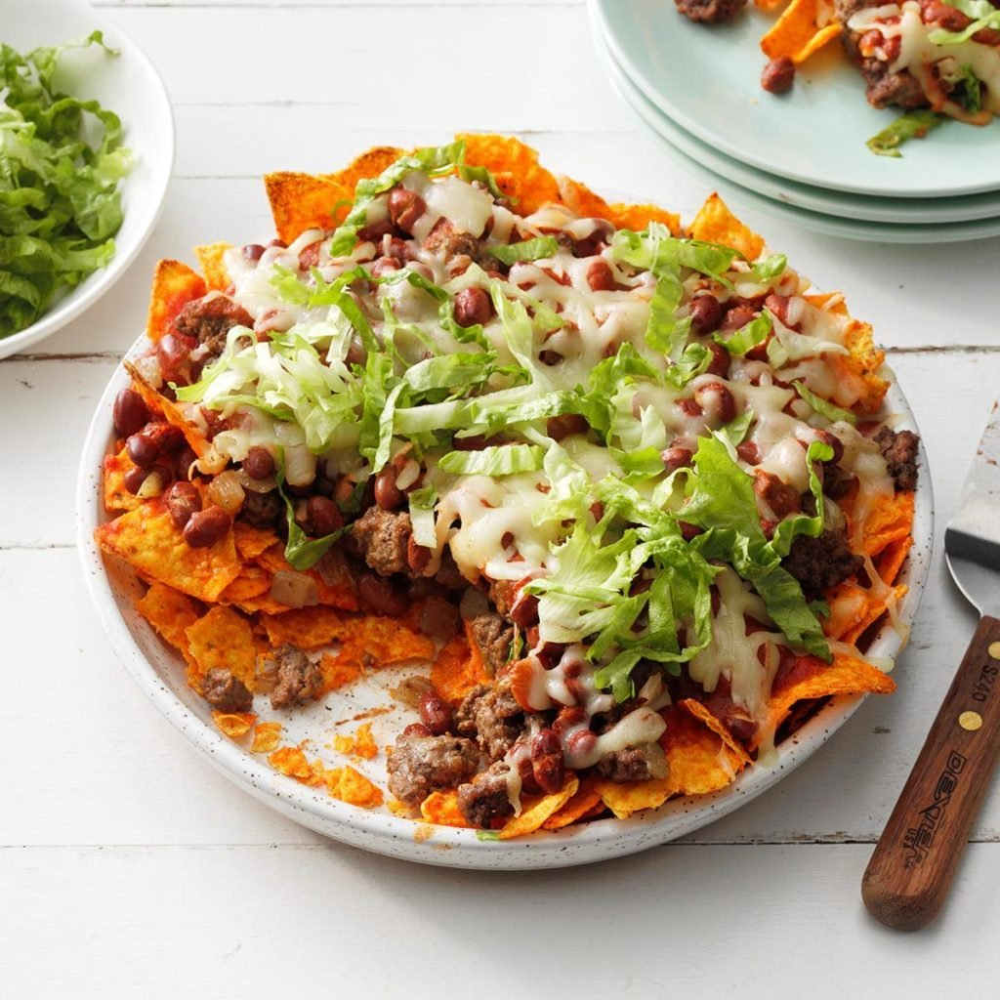

Nacho Pie
Ingredients
4 cups nacho tortilla chips, coarsely crushed
1 pound ground beef
1/2 cup chopped onion
1 can (16 ounces) chili beans, undrained, warmed
1 can (8 ounces) tomato sauce
1 cup shredded part-skim mozzarella cheese
Directions
- Place chips in a lightly greased 9-in. pie plate and set aside.
- In a large skillet, cook beef and onion over medium heat until meat is no longer pink; drain. Spoon over chips. Top with beans, tomato sauce and cheese.
- Bake, uncovered, at 375° until heated through and cheese is melted, for 7-8 minutes.
Nutrition Facts
1 serving: 462 calories, 24g fat (7g saturated fat), 59mg cholesterol, 841mg sodium, 40g carbohydrate (3g sugars, 6g fiber), 26g protein.
Total Time
Prep/Total Time: 30 min.